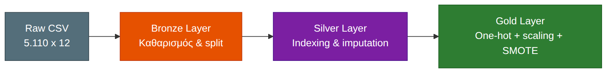
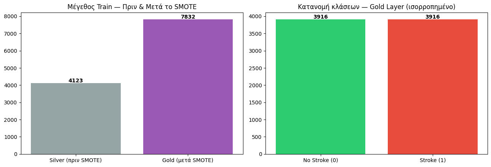
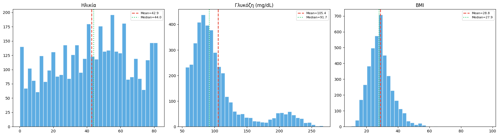
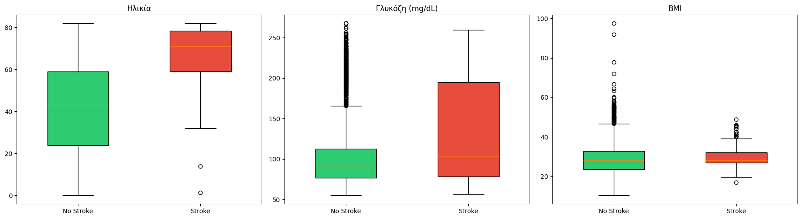
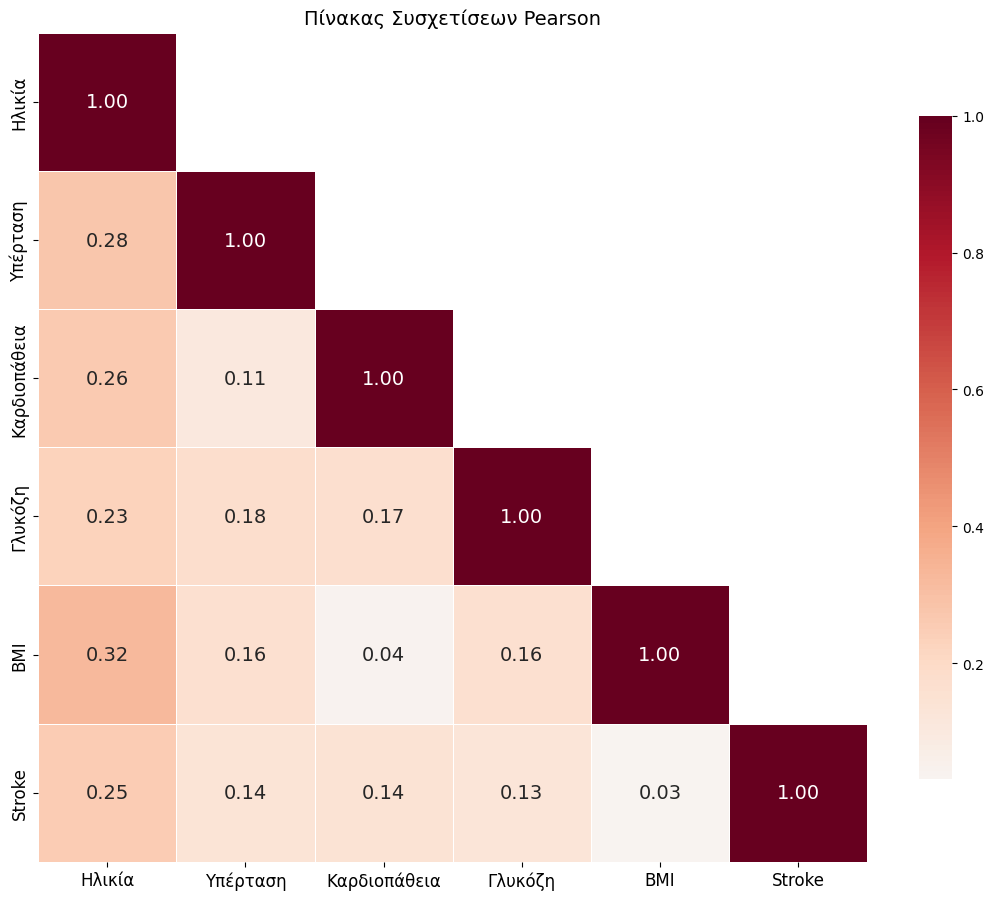
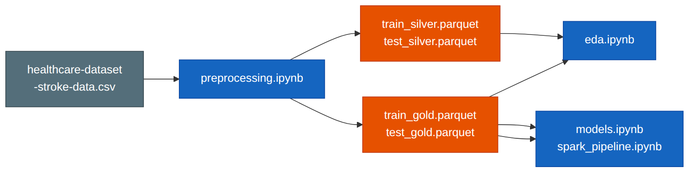

Big Data & Data Mining · Εξαμηνιαία Εργασία
Πρόκληση: Binary classification με σοβαρή ανισορροπία κλάσεων, μόλις 5% θετικά δείγματα.
| gender | Κατηγορική |
| age | Αριθμητική |
| hypertension | Δυαδική (0/1) |
| heart_disease | Δυαδική (0/1) |
| ever_married | Κατηγορική |
| work_type | Κατηγορική (5) |
| Residence_type | Κατηγορική |
| avg_glucose_level | Αριθμητική |
| bmi | Αριθμητική (N/A) |
| smoking_status | Κατηγορική (4) |
| stroke | Label (5%) |

| gender | 0-2 |
| ever_married | 0-1 |
| work_type | 0-4 |
| Residence_type | 0-1 |
| smoking_status | 0-3 |




Διαδικασία: 5-fold cross-validation + grid search υπέρ-παραμέτρων. Αξιολόγηση μόνο στο test set.

⚠ Αξιολόγηση αποκλειστικά στο test set (987, φυσικό imbalance 4.3%). Το test δεν συμμετέχει πουθενά στην εκπαίδευση.
| Median imputation | Ανθεκτική σε outliers |
| SMOTE | Διατηρεί όλα τα δεδομένα |
| OneHotEncoder | Αποφυγή ordinal bias |
| withMean=False | Διατήρηση sparsity |
| Parquet | Συμπίεση, schema |